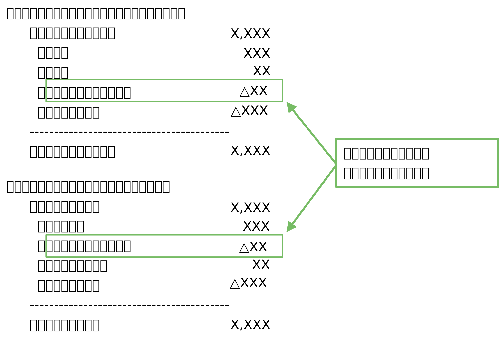
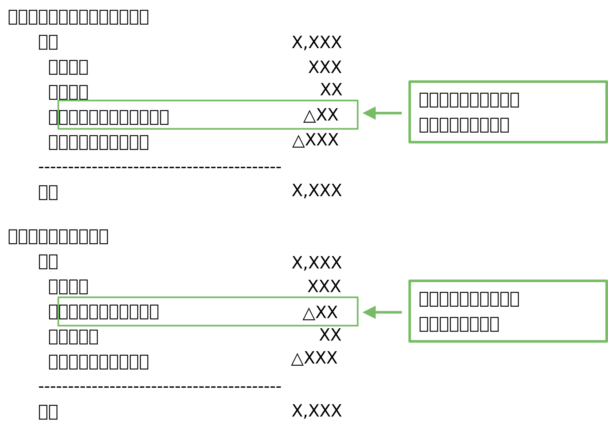

退職給付会計
仕事で急遽退職給付会計を知る必要が出てきたため、参考書やインターネットで概要を調べ以下にまとめました。全体像及び日本基準とIFRSとの差異の理解にとどまり、実務的な細かい処理についての学習は今後の課題としています。
以下の説明はIFRSベースで記述し、その後に日本基準との差異を説明する形にしています。
1. 概要
退職給付には、「退職一時金」と「企業年金」の２種類があります。企業年金は更に「確定給付型企業年金」と「確定拠出型企業年金」に分けることができます。退職給付会計は、「退職一時金」及び「確定給付型企業年金」を対象とする会計基準です。
退職一時金
退職時に企業内部の資金から一括で退職者に支払われます。企業の内部資金から支払われるもので、企業外部に資産を積み立てるものではありません。つまり、積み立てた資産は企業の資産としてBSに計上されています。役員退職慰労金や臨時割増退職金などの一時金制度も「退職一時金」に含めて考えます。
企業年金
「年金」とは定期的・継続的に支給される金銭のことです。年金は公的年金と私的年金に分けられます。私的年金には、「確定給付型企業年金」と「確定拠出型企業年金」の２種類があり、この内、退職給付会計が対象とするのは後者の確定給付型企業年金のみです。これらは、企業外部に年金資産を積み立てて、そこから退職者に支払われます。従って、積み立てられた資産そのものがその企業のBSに計上されることはありません。
2. 会計処理
退職給付会計により連結BS上で認識されるのは「退職給付に係る負債（資産）」となります。これは、下図の通り制度資産と確定給付制度債務の差額として認識されるものです（日本基準では制度資産を年金資産、確定給付制度債務を退職給付債務と呼びます）。
上図は積立不足が生じている場合であり、反対に積立超過の場合には資産が認識されることになります。ただし、積立超過で資産計上を行う場合、制度によっては企業が超過した資産を全て自由に使用できるわけではないため（一部を従業員に還元する必要があるため）、資産計上額は企業が便益を受ける額に限定されます。この資産計上の上限額のことをアセットシーリングと呼びます。日本基準にはこのアセットシーリングの考え方はなく、積立超過した部分の全額が資産計上されます。
以下では、確定給付制度債務や制度資産が増減する事象について１つ１つ仕訳を交えながら確認していきます。
勤務費用の発生
従業員が今期提供した役務の対価として、企業が退職時以降に支払うことを約束している額があれば、その現在価値を今期の費用として認識する必要があります。この費用を勤務費用と呼びます。他にも、勤務費用には制度の改定や縮小、清算に基づく過去の確定給付制度債務の変動（過去勤務費用）も含みます。勤務費用の仕訳は以下のような形になります。
| 借方 | 貸方 | |
| 退職給付費用 | 20 | |
| 退職給付に係る負債 | 20 |
日本基準では過去勤務費用を発生時の費用とはせず、税効果考慮後の金額で「その他の包括利益」として認識します。その後、一定期間内に費用処理して当期純利益に振り替えます（リサイクリング処理を行う）。一方、IFRSは過去勤務費用が発生した時点で当期純利益に振り替えます。
※IFRSでも2011年の改正以前は、過去勤務債務のうち一部について遅延認識を認めていましたが、改正後は即時認識に変更されました。
利息純額の発生
期首の制度資産と確定給付制度債務との差額に、割引率を乗じて算定したものが利息純額となります（時の経過による資産と負債の増額を表した処理となります）。ここで使用する割引率は、その国の優良社債を参照するこになっています。現在価値で利息純額の金額だけBS上の確定給付負債（もしくは資産）が増加します。
利息純額が負債側で発生したときの仕訳は次の通りです。
| 借方 | 貸方 | |
| 退職給付費用 | 5 | |
| 退職給付に係る負債 | 5 |
日本基準では年金資産に割引率を掛けるところはIFRSと同じですが、退職給付債務には割引率ではなく期待運用収益率を掛けることになります。また、使用する割引率として国債や優良社債等を認めており、国債が利用できる点が異なっています。割引率を見直す頻度も異なっており、日本基準では退職給付債務が10%以上変動しない場合、前期末の割引率を使用してもよいことになっていますが、IFRSにはそのような決まりがありません。
従って、日本基準では時の経過による利息部分を純額で認識するのではなく、年金資産と退職給付債務でそれぞれ別に捉えています（IFRSも開示では資産と債務で分けて記載することが要請されています）。また、退職給付債務については利息部分とそれ以外の予想される運用損益をまとめて期待運用収益としています。後で出てくる日本基準とIFRSの開示例を見るとGAAP差異がよく分かります。
※IFRSでも2011年の改正以前は期待運用収益を計上していましたが、事業主の恣意性が入る余地が大きいという理由で廃止されました。
退職給付の支払い
(1) 企業から退職金が支払われる場合
退職一時金などにより、基金からではなく企業から従業員へ退職金が支払われる場合には、負債の取崩しが生じます。
| 借方 | 貸方 | |
| 退職給付に係る負債 | 100 | |
| 現預金 | 100 |
(2) 基金から退職金が支払われる場合
基金から年金が支払われる場合は、制度資産と確定給付制度債務の両者が減額がされるため仕訳は不要です。
年金掛金の拠出
企業から年金基金へ掛金を拠出すると制度資産が増加します。制度資産の増加は退職給付債務を減らす方向に動かします。
| 借方 | 貸方 | |
| 退職給付に係る負債 | 100 | |
| 現預金 | 100 |
再測定（OCIでの認識）
再測定は以下の種類に分けられます。
- 数理計算上の差異
- 制度資産の運用から生じた実際の収益（利息純額に含まれている金額を除く）
- アセットシーリングの影響額
再測定は費用処理するのではなく、その他の包括利益で認識されます。
| 借方 | 貸方 | |
| 退職給付に係る調整累計額（OCI） | 20 | |
| 退職給付に係る負債 | 20 |
同じ数理計算上の差異という言葉を使用していても、IFRSと日本基準ではその中身が異なっています。
例えば、日本基準では期待運用収益と実際の運用結果の差異は数理計算上の差異に含めます。一方、IFRSでは再測定の２番目に記載した通り「制度資産の運用から生じた実際の収益」として数理計算上の差異とは別のものの扱いです。会計処理はどちらもその他の包括利益に認識されますが、IFRSの開示ではこれらの項目を別々に記載しなければならないため、基準差異をしっかりと理解しておく必要があるでしょう。日本基準の開示例
IFRSの開示例

再測定額のその後の扱い
IFRSでは純資産の細かな基準が全くないため、再測定により生じたOCIについても認識後の取り扱いは特に決まっていません。多くの会社では、「退職給付に係る調整累計額」を利益剰余金に振り替える処理を行っているようです。また、その振替タイミングも会計基準では決められていないため、OCIで認識後に即座に利益剰余金へ振り替えることが一般的なようです。
| 借方 | 貸方 | |
| 利益剰余金 | 20 | |
| 退職給付に係る調整累計額（OCI） | 20 |
日本基準ではOCIで認識した未認識差異（数理計算上の差異及び過去勤務差異）については、平均残存勤務期間以内に費用処理することが求められています。従って、IFRSでは純損益に振り替えることなく、OCIで認識した後は資本の一部として残したままにしておくのに対し、日本基準ではOCIからPLへの振替（リサイクリング）が必要となる点がGAAP差異となっています。
借方 貸方 退職給付費用 20 退職給付に係る調整累計額（OCI） 20
参考図書

- 2 退職給付会計のしくみ(第2版) (【図解でざっくり会計シリーズ】)
- 新日本有限責任監査法人
- 出版社 : 中央経済社
- 発売日 : 2017/2/21